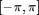

LOCAL3X3KERNEL - Compute local kernels defined by zones and levels.
Contents
Description
Define a set of local (3,3) directional kernels following the approach of [Leu00].
Syntax
Kernel = LOCAL3X3KERNEL('Property', propertyvalue, ...);
Property [propertyname propertyvalues]
'ker' : optional string for default kernel definition; ker is indeed either: 'i0', 'i1', 'g0', or 'g1', where the first letter stands for intensity ('i') or gradient ('g'), and the second for the original definition of [Leu00] ('0') or new weights'definition ('1'); for instance, if ker='g0', and no other option is passed, then the weights for the gradient indices as defined in [Leu00] will be used; default (no arguments passed): ker = 'i0'.
'nz' : number of zones to divide the range ; it is either 8 or 16, where the following representation for the orientation is used:
|nz=8|:
--------------- -------------
| NW | N | NE | | 4 | 3 | 2 |
--------------- -------------
| W | | E | => | 5 | | 1 |
--------------- -------------
| SW | S | SE | | 6 | 7 | 8 |
--------------- -------------
|nz=16|:
----------------------- -----------------
| \ NNW | N | NNE / | | \ 6 | 5 | 4 / |
| NW | | NE | | 7 | | 3 |
| WNW \ | | / ENE | | 8 \ | | / 2 |
----------------------- -----------------
| W | | E | => | 9 | | 1 |
----------------------- -----------------
| WSW / | | \ ESE | | 10/ | | \16 |
SW | | SE | | 11 | | 15 |
| / SSW | S | SSE \ | | / 12| 13|14 \ |
----------------------- -----------------
but these settings can be changed by passing different kernels for the position indexes (see 'ik' below); in default cases ('ker' provided), nz=8.
'nl' : number of levels, as defined by [Leu00]; in default cases ('ker' provided), nl=3.
'ik' : optional (3,3) matrix (filled with integer values) setting the positions of the weights for the nl different levels and for the first (in general 2) zone(s); the position for all other zones will be derived by rotation of ik; if nl is not provided, it is set to the max of the values in ik.
'vk' : optional (3,3) matrix setting the weigths values for all possible levels and for the first (in general 2) zone(s); it can be passed with the option 'ker' to change the weights used in the kernel definition.
'norm' : optional boolean flag for normalizing the output kernels; default: norm=true, ie. the sum of the weights in the various kernels is equal to 1.
Output
Kernel : a matrix of dimension 4 with size (3,3,nl,nz) setting zone- and level-dependent weight kernels.
References
[Leu00] J.G. Leu: "Edge sharpening through ramd width reduction", Image and Vision Computing, 18:501-514, 2000. http://www.sciencedirect.com/science/article/pii/S0262885699000414
[GS10] J. Grazzini and P. Soille: "Iterative ramp sharpening for structure/signature-preserving simplification of images", Proc. ICPR, pp. 4586-4589, 2010. http://ieeexplore.ieee.org/xpls/abs_all.jsp?arnumber=5597348
Function implementation
function [Kernel,varargout] = local3x3kernel(varargin)
parsing parameters
error(nargchk(1, 13, nargin, 'struct')); error(nargoutchk(1, 2, nargout, 'struct')); p = createParser('LOCAL3X3KERNEL'); % only optional parameters p.addParamValue('ker', [], @(x)ischar(x) && ... any(strcmpi(x,{'i0', 'ileu', 'i1', 'g0', 'gleu', 'g1','glass'}))); p.addParamValue('nz', [], @(x)x==8 || x==16); p.addParamValue('nl', [], @(x)isscalar(x) && x>0); p.addParamValue('ik', [], @(x)isnumeric(x) && floor(x)==x && ... size(x,1)==3 && size(x,2) == 3); p.addParamValue('vk', [], @(x)isnumeric(x) && size(x,1)==3 && size(x,2) == 3); p.addParamValue('norm', true, @islogical); % parse and validate all input arguments p.parse(varargin{:}); p = getvarParser(p);
checking compatibility and setting default
if ~isempty(p.ker) if ~isempty(p.nl) || ~isempty(p.nz) disp('properties nz and nl incompatible with ker: they are ignored'); end p.nz = 8; p.nl = 3; if max(unique(p.ik)) > p.nl, error('incompatible ker and ik provided'); end else if ~(isempty(p.nl) && isempty(p.nz)) && (isempty(p.vk) || isempty(p.ik)) error('incomplete setting of the input parameters'); end if ~isempty(p.ik) if isempty(p.nl), p.nl = max(unique(p.ik)); elseif max(unique(p.ik)) > p.nl, error('incompatible nl and ik provided'); end if isempty(p.nz), p.nz = 8; end elseif ~isempty(p.vk) % && isempty(ik) p.nz = 8; p.nl = 3; end end
- compute the position kernel initialize
if ~isempty(p.ker) || isempty(p.ik) [p.ik, level_indices] = defaultpkernelfirstzone(); p.nl = length(fieldnames(level_indices)); end % compute the position indexes in the local (3 x 3) neighbourhoods for all % possible zones p.ik = rotkernelperzone(p.ik,p.nz);
- compute the weighting kernel initialize
if ~isempty(p.ker) || isempty(p.vk) p.vk = defaultkernelfirstzone(p.ker, p.nz); end % compute for all possible zones p.vk = rotkernelperzone(p.vk,p.nz);
- create the (nlevels x nzones) matrices of size (3 x 3) used for computing the different indices for every single level and zone
Kernel = kernelperzoneperlevel(p.ik, p.vk, p.nl, p.nz, p.norm); % mote: Kernel is indexed by [x,y,zone,level] if nargout==2, varargout{1} = level_indices; end
end% end of local3x3kernel
Subfunctions:
- functions for deriving kernels for different positions
ROTKERNELPERZONE - Zone-by kernel definition through rotation. -------------------------------------------------------------------------
function KernelPerZone = rotkernelperzone(KernelFirstZone, nzones) [x y nfirst] = size(KernelFirstZone); if nfirst == nzones KernelPerZone = KernelFirstZone; return; end % initialize the output rotated kernels KernelPerZone = zeros(x,y,nzones); % initialize with values in firstZone KernelPerZone(:,:,1:nfirst) = KernelFirstZone; % rotate the matrices for all positions for z=3:nzones KernelPerZone(:,:,z) = rot90(KernelPerZone(:,:,z-nfirst)); end end % end of rotkernelperzone
KERNELPERZONEPERLEVEL - Zone-by level-by kernel definition. -------------------------------------------------------------------------
function KernelPerZonePerLevel = ... kernelperzoneperlevel(Levels, KernelPerZone, nlevels, nzones, norm) [x y] = size(Levels(:,:,1)); % nlevels = lenght(unique(Levels)); % nzones = size(KernelPerZone,3); % initialize the output matrix KernelPerZonePerLevel = zeros(x,y,nzones,nlevels); % estimate the masks used for the different zones and levels for l = 1:nlevels for z = 1:nzones KernelPerZonePerLevel(:,:,z,l) = ... (Levels(:,:,z)==l) .* KernelPerZone(:,:,z); if norm s = sum(sum(KernelPerZonePerLevel(:,:,z,l))); if abs(s) > 0 KernelPerZonePerLevel(:,:,z,l) = ... KernelPerZonePerLevel(:,:,z,l) / s; end end end end end % end of findkernelperzoneperlevel
- functions for default kernels' initialization
DEFAULTPKERNELFIRSTZONE - Default definition of the L, M and H positions in local (3,3) neighbourhoods for the two first zones: (a) zone=1 and (b) zone=2 -------------------------------------------------------------------------
function [ik, level_indices] = defaultpkernelfirstzone() % 4(a) 5(a) 4(b) 5(b) % ------------- ------------- ------------- ------------- % | L | M | H | | | | | | M | H | H | | | H | H | % ------------- ------------- ------------- ------------- % | L | M | H | | L | M | H | | L | M | H | | L | M | H | % ------------- ------------- ------------- ------------- % | L | M | H | | | | | | L | L | M | | L | L | | % ------------- ------------- ------------- ------------- level_indices = struct( 'L', 1, 'M', 2, 'H', 3); L = level_indices.('L'); M = level_indices.('M'); H = level_indices.('H'); % nlevels = length(fieldnames(level_indices)); % zone 1 (0<=theta<pi/4) : 5(a) ik(:,:,1) = [ L M H; L M H; L M H ]; %ikI=ik; ikG(:,:,1) = [ 0 0 0 ; L M H; 0 0 0 ]; % zone 2 (pi/4<=theta<pi/2) : 5(b) ik(:,:,2) = [ M H H; L M H; L L M ]; %ikI= ik; ikG(:,:,2) = [ 0 H H ; L M H; L L 0 ]; end % end of defaultpkernelfirstzone
DEFAULTKERNELFIRSTZONE - Default definition of the intensity and gradient weighting kernels in local (3,3) neighbourhoods for the two first zones as they were defined in [Leu00] -------------------------------------------------------------------------
function vk = defaultkernelfirstzone(ker, nzones) if ~any(strcmp(ker,{'i0','ileu','i1','g0','gleu','g1','glass'})) disp('in DEFAULTKERNELFIRSTZONE : unknown default mask definition'); ker = 'i0'; elseif isempty(ker) ker = 'i0'; % intensity masks defined by Leu end switch ker % default kernels of intensity masks values case {'i0','ileu'} % original weights for intensity indices: figures 4(a) and 4(b) in % [Leu00] % ------------- ------------- % | 1 | 1 | 1 | | 1 | 1 | 0 | % ------------- ------------- % | 2 | 2 | 2 | | 1 | 2 | 1 | % ------------- ------------- % | 1 | 1 | 1 | | 0 | 1 | 1 | % ------------- ------------- vk(:,:,1) = [ 1 1 1; 2 2 2; 1 1 1]; % zone 1 (0<=theta<pi/4) vk(:,:,2) = [ 1 1 0; 1 2 1; 0 1 1]; % zone 2 (pi/4<=theta<pi/2) case 'i1' % new proposed weights for intensity indices % ------------- ------------- % | 1 | 1 | 1 | | 1 | 2 | 1 | % ------------- ------------- % | 2 | 2 | 2 | | 2 | 2 | 2 | % ------------- ------------- % | 1 | 1 | 1 | | 1 | 2 | 1 | % ------------- ------------- vk(:,:,1) = [ 1 1 1; 2 2 2; 1 1 1]; vk(:,:,2) = [ 1 2 1; 2 2 2; 1 2 1]; % default kernels of gradient masks values case {'g0','gleu'} % original weights for gradient indices: figures 5(a) and 5(b) in % [Leu00] % ------------- ------------- % | 0 | 0 | 0 | | 0 | 1 | 0 | % ------------- ------------- % | 1 | 1 | 1 | | 1 | 1 | 1 | % ------------- ------------- % | 0 | 0 | 0 | | 0 | 1 | 0 | % ------------- ------------- vk(:,:,1) = [ 0 0 0; 1 1 1; 0 0 0]; vk(:,:,2) = [ 0 1 0; 1 1 1; 0 1 0]; case 'g1' % new proposed weights for gradient indices % ------------- ------------- % | 0 | 0 | 0 | | 0 | 2 | 1 | % ------------- ------------- % | 1 | 1 | 1 | | 2 | 1 | 2 | % ------------- ------------- % | 0 | 0 | 0 | | 1 | 2 | 0 | % ------------- ------------- vk(:,:,1) = [ 0 0 0; 1 1 1; 0 0 0]; vk(:,:,2) = [ 0 2 1; 2 1 2; 1 2 0]; case 'glass' theta = linspace(pi/2, 5*pi/2, nzones+1); vk = hourglasskernel([3 3],1,0.4,[2 2],theta); vk = vk(:,:,1:nzones); end end % end of defaultkernelfirstzone